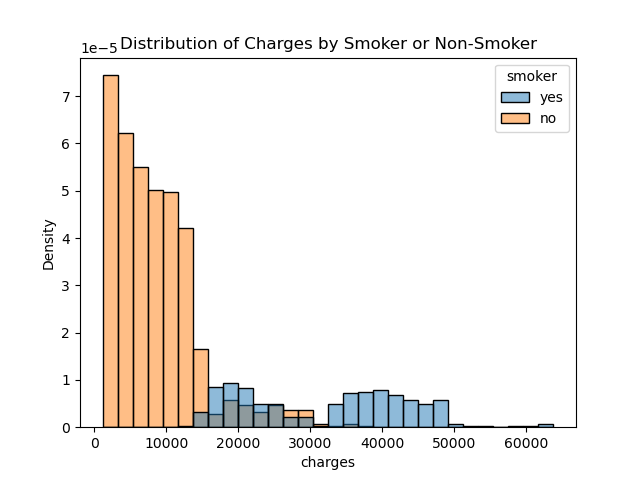
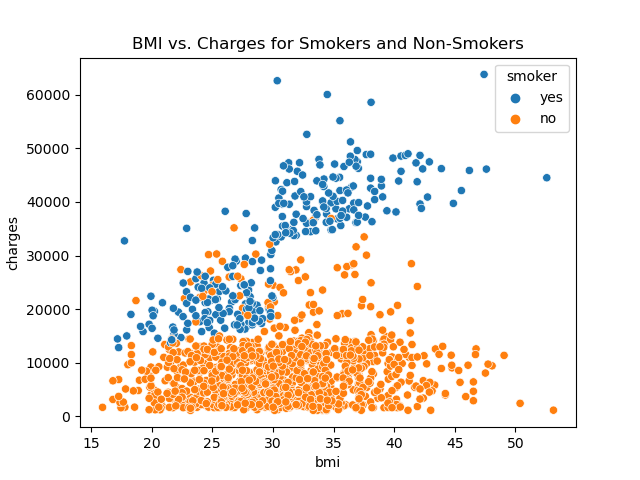
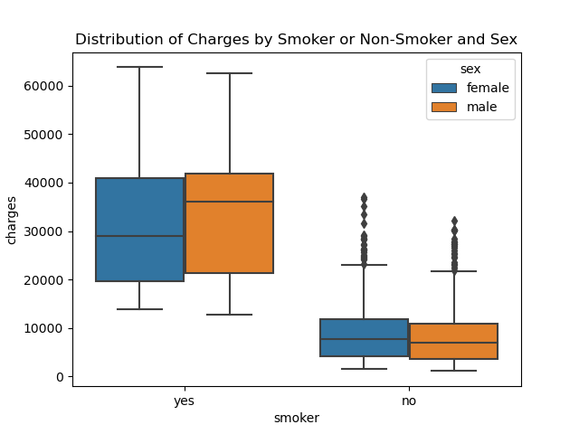

STAT 159 - Final Project#
Predicting Health Insurance Charges: An Exploratory Analysis of Demographic and Lifestyle Factors#
import pandas as pd
import numpy as np
import statsmodels.api as sm
from sklearn.model_selection import train_test_split
from sklearn.metrics import accuracy_score, confusion_matrix, classification_report
from sklearn.neighbors import KNeighborsClassifier
from sklearn.tree import DecisionTreeClassifier
from sklearn.ensemble import RandomForestClassifier
from sklearn.svm import SVC
from instools import utils
1. Introduction#
1.1 Overview and Objectives#
The rising cost of healthcare has become a significant concern for both individuals and insurance companies. In this analysis, our primary objective is to explore the factors affecting health insurance charges and develop a model to predict these charges based on demographic and lifestyle factors. Understanding these relationships can help insurance companies develop better pricing strategies and assist individuals in making informed decisions about their health and insurance options.
1.2 Dataset Description and Relevance#
The dataset used for this analysis has been obtained from Kaggle and contains information on insurance charges for a sample of individuals. It provides insight into the relationship between various factors and the cost of health insurance, making it highly relevant to the problem at hand. The dataset consists of 1340 records and 7 columns, including the target variable (charges) and the following predictor variables:
age: Age of the primary beneficiary (in years).
sex: Gender of the primary beneficiary, denoted as ‘male’ or ‘female’.
bmi: Body Mass Index (BMI) of the primary beneficiary, calculated as weight (in kg) divided by height (in m) squared. BMI is an indicator of body fat and is commonly used to categorize individuals as underweight, normal weight, overweight, or obese.
children: Number of dependents (children) covered by the health insurance plan.
smoker: Smoking status of the primary beneficiary, denoted as ‘yes’ or ‘no’.
region: Geographical region of the primary beneficiary’s residence, categorized as ‘northeast’, ‘northwest’, ‘southeast’, or ‘southwest’.
Note that charges occur to health insurance premiums, pain on a regular basis, NOT total health-related charges. By examining these variables, we aim to identify key factors that contribute to health insurance charges and use them to predict future charges accurately.
2. Data Preprocessing and Exploration#
2.1 Preprocessing and Cleaning#
The dataset provided was already in a clean and well-organized format, requiring minimal preprocessing. We verified the data types, checked for missing or duplicate values, and confirmed that the categorical variables were consistently labeled. No significant data cleaning was necessary, allowing us to proceed directly to the data exploration phase.
2.2 Data Exploration#
An extensive exploratory data analysis (EDA) was conducted to gain insights into the dataset and identify potential patterns or correlations. All the detailed exploration can be found in the eda.ipynb notebook. Some of the key techniques used include:
Heatmaps: To visualize the correlation between different variables.
Histograms: To examine the distribution of charges among smokers and non-smokers.
Box plots: To compare the distribution of charges between smoker and non-smoker groups, as well as between males and females.
Scatter plots: To investigate the relationship between age and charges for non-smokers.
2.3 Key Findings#
Through our data exploration, we discovered several interesting patterns and correlations in the data:

A strong correlation was observed between smoking status and insurance charges, with smokers having significantly higher charges than non-smokers.

Age and BMI were also positively correlated with insurance charges, indicating that older individuals and those with higher BMIs tend to have higher charges.

The distribution of charges for males and females showed some differences, but the effect of sex on charges was less pronounced compared to other factors like smoking status, age, and BMI.
Other findings include, the number of children covered by the insurance plan had a minor effect on charges, with individuals having more dependents generally facing higher charges.
These findings provided a solid foundation for further analysis and the development of a predictive model for health insurance charges. More plots can be seen in the eda notebook.
3. Assumptions and Justification#
3.1 Assumptions#
We made several assumptions about the data and its acquisition:
The data is representative of the population of interest, capturing a diverse set of individuals with varying demographic and lifestyle factors.
The data accurately reflects the real-world situation, and there are no systematic errors or biases in the data collection process.
The variables included in the dataset are relevant and sufficient to predict health insurance charges.
3.2 Justifications and Limitations#
We chose the available variables (age, sex, BMI, children, smoker, and region) because they are commonly considered factors that influence health insurance charges. No major transformations were applied to the data, as it was already in a clean and usable format. However, we acknowledge that there could be potential limitations or biases in the data:
The dataset may not capture all relevant factors that influence insurance charges, such as pre-existing medical conditions or income levels.
There may be biases in the data collection process that could affect the generalizability of the results.
The size of the dataset may limit the complexity of the models that can be built or the confidence in the predictions.
3.3 Statistical Hypothesis and Model#
Based on the findings from the EDA, we propose a statistical model to predict health insurance charges using the available variables. The choice of the specific model will be based on its performance and interpretability. We will test different models, such as linear regression, decision trees, or ensemble methods, and choose the one that best balances accuracy and simplicity. The reasoning behind this approach is to create a model that not only performs well but also provides insights into the relationships between the variables and insurance charges.
Linear Regression#
First, we can run a simple linear regression to see how each variable impacts health insurance variable charges.
#read in the data
ins = pd.read_csv("data/insurance.csv")
#create dummy variables and drop variables that would lead to multicollinearity
ins_lm = pd.get_dummies(ins)
ins_lms = ins_lm.drop(['sex_female', 'smoker_no', 'region_southwest'], axis = 1)
#set up the predictors (x) and outcome (y) variables
x = ins_lms[['age', 'bmi', 'children', 'smoker_yes', 'sex_male', 'region_northeast', 'region_northwest', 'region_southeast']]
y= ins_lms['charges']
x = sm.add_constant(x)
results = sm.OLS(y,x).fit()
print(results.summary())
OLS Regression Results
==============================================================================
Dep. Variable: charges R-squared: 0.751
Model: OLS Adj. R-squared: 0.749
Method: Least Squares F-statistic: 500.8
Date: Wed, 10 May 2023 Prob (F-statistic): 0.00
Time: 00:49:33 Log-Likelihood: -13548.
No. Observations: 1338 AIC: 2.711e+04
Df Residuals: 1329 BIC: 2.716e+04
Df Model: 8
Covariance Type: nonrobust
====================================================================================
coef std err t P>|t| [0.025 0.975]
------------------------------------------------------------------------------------
const -1.29e+04 1020.964 -12.634 0.000 -1.49e+04 -1.09e+04
age 256.8564 11.899 21.587 0.000 233.514 280.199
bmi 339.1935 28.599 11.860 0.000 283.088 395.298
children 475.5005 137.804 3.451 0.001 205.163 745.838
smoker_yes 2.385e+04 413.153 57.723 0.000 2.3e+04 2.47e+04
sex_male -131.3144 332.945 -0.394 0.693 -784.470 521.842
region_northeast 960.0510 477.933 2.009 0.045 22.466 1897.636
region_northwest 607.0871 477.204 1.272 0.204 -329.068 1543.242
region_southeast -74.9711 470.639 -0.159 0.873 -998.247 848.305
==============================================================================
Omnibus: 300.366 Durbin-Watson: 2.088
Prob(Omnibus): 0.000 Jarque-Bera (JB): 718.887
Skew: 1.211 Prob(JB): 7.86e-157
Kurtosis: 5.651 Cond. No. 326.
==============================================================================
Notes:
[1] Standard Errors assume that the covariance matrix of the errors is correctly specified.
As the results describe, age, bmi, number of children, and smoking all significantly contribute to a higher premium. This aligns with what we saw in the exploratory data analysis section as well. In reality, we would also want to explore other variables that can more discretely influence premium charges.
Modeling#
Next, we can use different classifiers to see how accurately we can predict a variable of choice. As seen above, smoking was one of the most significant variables on charges. In this example, we will see how well we can predict whether an individual smokes using a random forest classifier. Additional modeling can be viewed in the modeling notebook. The function “modeling_accuracy” can also work with other classifiers and predictor variables.
#convert all object columns into numerical values
ins_mod = ins.copy()
ins_mod = utils.label_encoder(ins_mod, ['sex', 'smoker', 'region'])
dt = utils.model_accuracy(RandomForestClassifier(), ins_mod, ['age','sex', 'bmi', 'children','charges', 'region'], 'smoker')
RandomForestClassifier Accuracy estimating smoker
Training Accuracy: 1.0
Testing Accuracy: 0.9626865671641791
4. Analysis and Results#
We saw that both simple linear regression and modeling can be useful on a data set like this one that describes health premium charges. We also noted that these functions can be adjusted to better fit the needs of the researcher and hopefully expand its use beyond the scope of this project and data set. The importance of this analysis is the impact on individuals and health insurance companies. Recently, health insurance has been a large topic of debate, with the amount spent on health and medical bills dramatically rising in the United States over the past few years.
5. Contribution Statement#
Claire Mai: created the eda notebook, function label_encoder, and tests for label_encoder; also chose the data and created the figures and test folder folder
Avery Klauke: created the modeling notebook, function modeling_accuracy, tests for modeling_accuracy, helped with the main notebook; created binder link and license
Gilberto Perezalonso: created the main notebook, created jupyterbook
Prasaan Guruprasad: